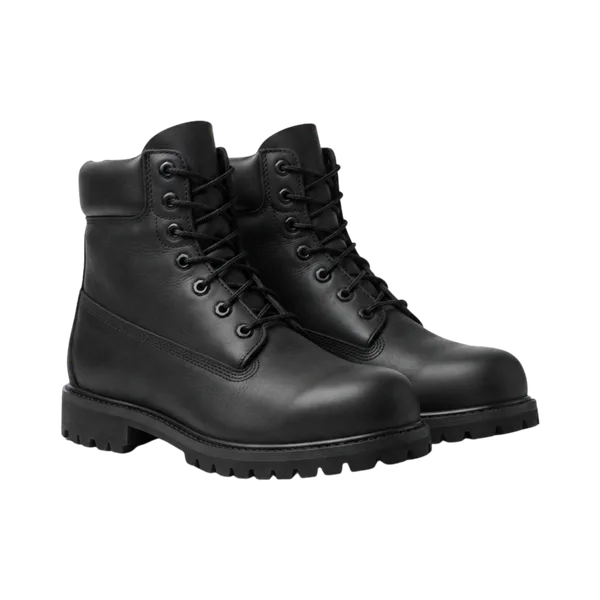

Standards hub · Safety footwear
Every safety boot sold in the UK starts from the same baseline — a toe cap that survives a 200-joule impact. Everything after that is a code on the label: waterproofing, midsole protection, sole grip. This hub decodes the label, then points to the detailed guides.

The short version
The standard behind UK safety footwear is EN ISO 20345. Its non-negotiable is the toe cap: it must protect against a 200-joule impact (roughly a 20 kg mass dropped from a metre) and a 15 kN compression. That's true of a basic SB shoe and a top-spec S7 boot alike — the cap protection does not get "better" as the code goes up.
What the S-codes add is everything around the cap: antistatic soles, energy-absorbing heels, water-resistant uppers, puncture-resistant midsoles, cleated outsoles. So choosing footwear is two decisions, not one: which S-code the ground and weather demand, and which cap material suits the job — steel, composite or aluminium.
The 2022 revision of the standard also reshuffled the codes — adding S6 and S7 for fully waterproof footwear — so a label bought this year may read differently from one bought five years ago. The guides below cover the differences.
At a glance
Nearly every safety footwear decision resolves to ground, weather and site rules.
Debris that can puncture a sole means a midsole code — S1P, S3, S5 or S7 — not plain S1 or S2.
Dry indoor work suits S1/S1P. Outdoor ground calls for S3. Genuinely wet work points to S6/S7 or a wellington (S4/S5).
Principal contractors commonly require S3 boots with midsole and ankle support regardless of task — check the site induction before buying lighter kit.
Quick reference
The full code table lives in the S-codes guide — this is the short route to an answer.
| Typical work | Sensible spec | Why |
|---|---|---|
| Warehouse picking, light assembly, driving | S1 / S1P | Dry ground; midsole only if stray fixings are a risk |
| General construction site | S3 | Wet ground + puncture risk + cleated grip; the common site minimum |
| Groundworks, drainage, concrete pours | S5 wellington | Standing water and mud beyond what a leather boot sheds |
| Outdoor trades through a British winter | S7 (or S3 + WR) | S3 protection plus certified whole-boot waterproofing |
| Food production, hygiene areas | S2 (often white) | Washable water-resistant upper; midsole rarely needed |
| Airport / secure sites with metal detectors | Any code, composite cap | Metal-free footwear clears archways without stripping off |
The bit people miss
Go deeper
This hub is the overview. Each guide takes one decision further — and links back here.
What SB, S1, S1P, S2, S3 and the new S6 and S7 ratings actually require — plus the add-on letters, in one table.
Read the guide →Same 200 J rating, different everything else — weight, temperature, metal detectors and what happens after an impact.
Read the guide →Drying without cracking, cleaning that preserves the leather, and the five signs a boot is done protecting you.
Read the guide →Questions
EN ISO 20345 is safety footwear — it requires a 200-joule toe cap. EN ISO 20347 is occupational footwear with no toe cap requirement, used where slip or water resistance matters but impact doesn't. If the job involves anything that can fall on or run over a foot, you need 20345.
Yes — every EN ISO 20345 code from SB to S7 requires the same 200 J impact and 15 kN compression cap performance. Higher codes add protection around the cap (water resistance, midsoles, grip), not a stronger cap.
S3 is the most common site minimum — toe cap, puncture-resistant midsole, water-resistant upper and a cleated outsole. Some principal contractors also require ankle support, which means a boot rather than a shoe or trainer. Check the site induction pack before buying.
There's no legal replacement interval — condition decides. Daily site wear typically retires a pair in 6–12 months. Replace immediately after any significant impact to the cap, when tread wears smooth, or when the upper splits or delaminates.
EN ISO 20345 boots, shoes and safety trainers from stock — S1P and S3 always available, with trade-account ordering for teams.